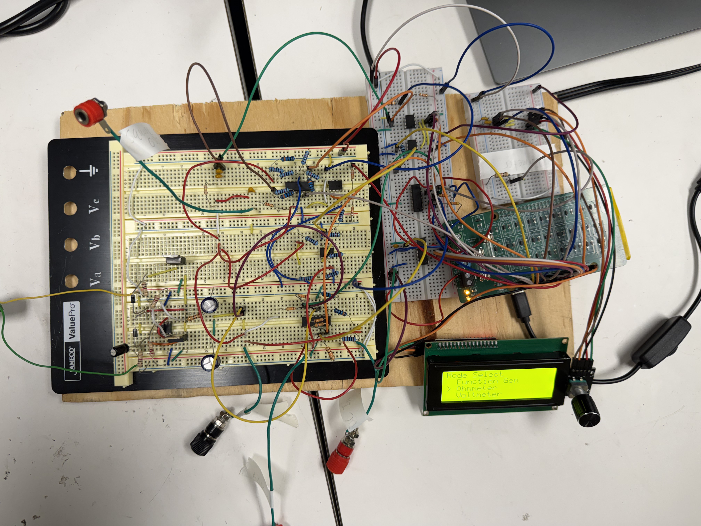
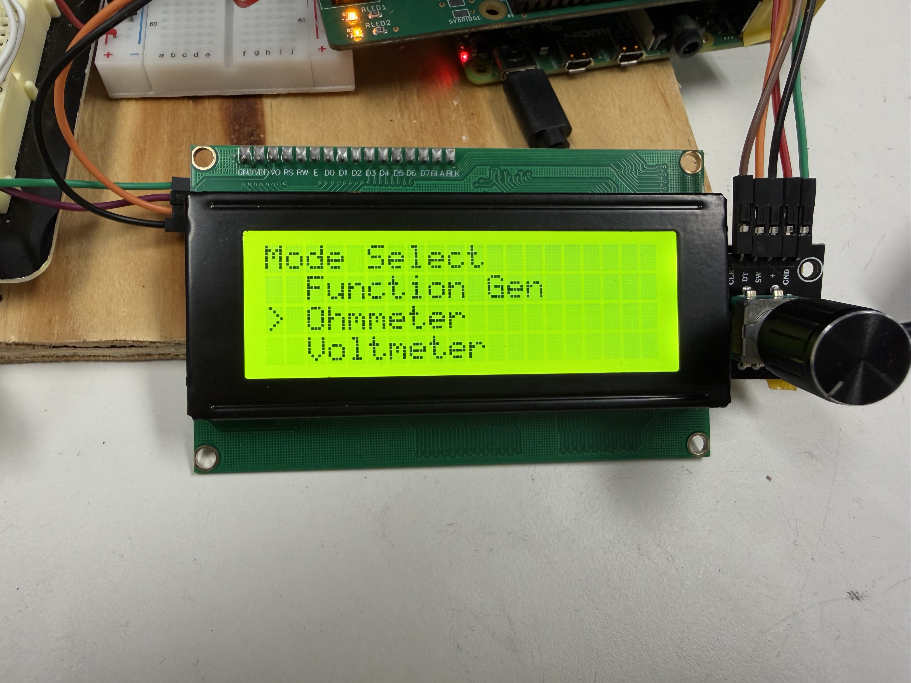

This tool bench has functionality for voltage measurement, resistance measurement, signal generation, and DC voltage referencing, making it a versatile platform for electronics testing and experimentation. The system includes a function generator capable of producing adjustable square waves, an autoranging ohmmeter for measuring resistance values, a voltmeter for accurate DC voltage readings, and a DC voltage reference with selectable output levels. All components are controlled through an interface that displays real-time values, allowing users to monitor and adjust outputs as needed.
This website serves as a user manual for the Tool Bench system. It provides step-by-step instructions, visual references, and guidance for each feature. By following this guide, any user can understand and operate the system effectively.


Our team, consisting of Jordin, Charlie, Nick, Karsten, and Ansh, collaborated to design and develop a functional electronics tool bench for accurate measurement and signal generation. Our goal was to create a reliable, user-friendly system that includes a function generator, ohmmeter, voltmeter, and DC reference.